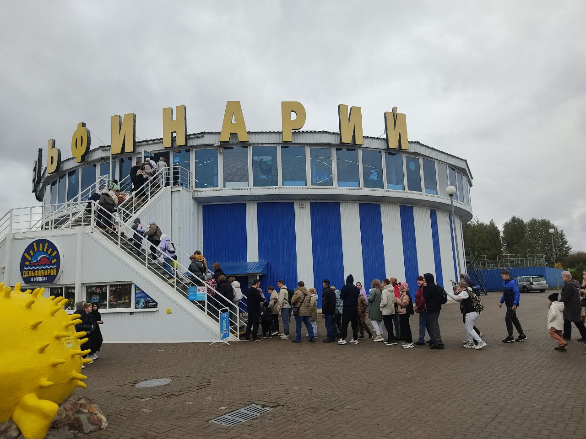
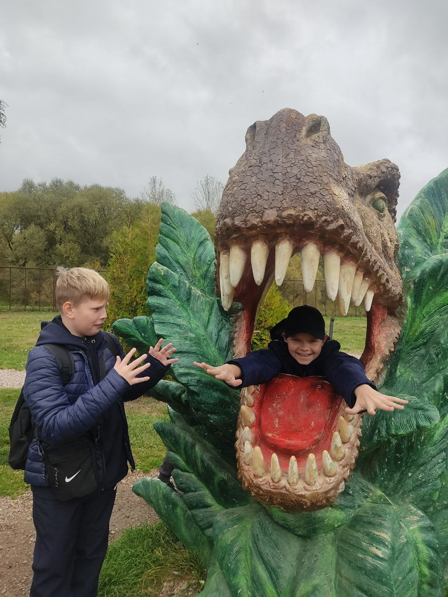

Зоопарк
Минский зоопарк — один из самых любимых уголков природы в столице Беларуси. Он расположен в пойме реки Свислочь и является домом для более чем 2 000 животных и свыше 400 видов, включая редких и экзотических обитателей со всего мира.
Здесь можно увидеть не только традиционных животных, но и познакомиться с обитателями экзотариума «Ориноко» — павильона, воссоздающего природу Южной Америки. Посетители могут наблюдать ягуаров, капибару, анаконд, пираний, арапаим, тропических птиц, рептилий и редких амфибий.
Особая гордость зоопарка — дельфинарий «Немо», в котором проходят зрелищные и познавательные представления. В них участвуют морские котики, морской лев и черноморские дельфины. Зрителям рассказывают об этих удивительных созданиях, их повадках и важности охраны морской природы.
На территории зоопарка также работает Динопарк — интерактивная зона с реалистичными фигурами динозавров в натуральную величину. Они двигаются, рычат и создают ощущение настоящего доисторического мира. Это место особенно нравится детям и отлично подходит для семейных прогулок.
Минский зоопарк — не просто выставка животных, а живой образовательный и развлекательный комплекс, где можно интересно и с пользой провести целый день.
Пройди тест для закрепления результата.
Тест